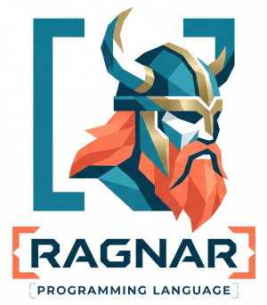
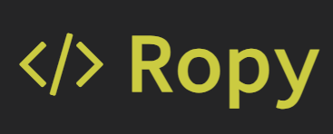

Ragnar
ActiveRagnar is a programming language I am building through vibecoding and experimentation. It is based on Rebol, but hosted on the .NET runtime. I plan to use it as a go-to scripting language.

Software Craftsman
I am Torbjørn, a passionate developer of software since 1999, and currently working as a consultant at Bouvet. What exites me at the moment is working in a well functioning team, crafting a useful product for our customer, and discovering how to best utilize AI to deliver higher quality software efficiently.
I am an allrounder, but have an affinity for programming languages - while .NET/C# is my workhorse, I have dabbled in a variety of languages over the years, including Ruby, Clojure, Common Lisp, Erlang, F#, Go, and more.
Ragnar is a programming language I am building through vibecoding and experimentation. It is based on Rebol, but hosted on the .NET runtime. I plan to use it as a go-to scripting language.

Ropy is a strange and interesting programming language I created as a side project. Esoteric, stack-based, and with source code that can flow in any direction. Its special syntax required a unique editor, which was even more fun to build. Try the online Ropy IDE today!
